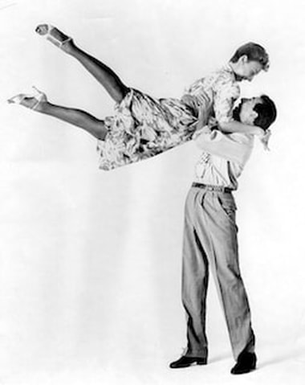
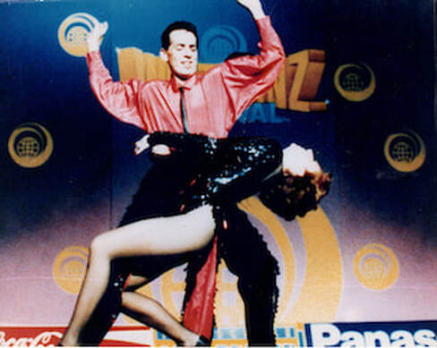
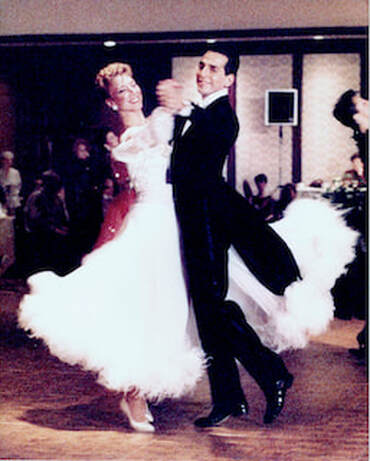
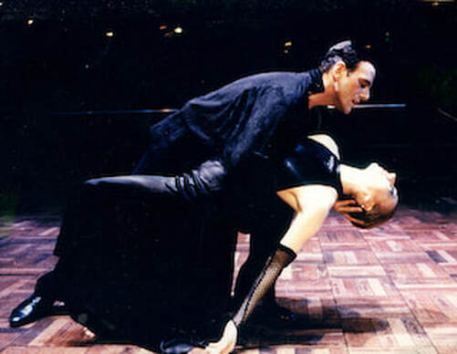
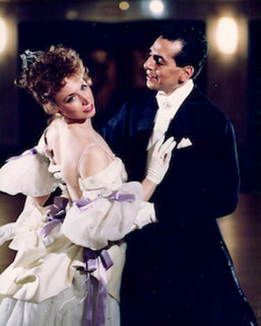

About
A new dimension in dance
As the creator of The 4th-Dimension Partnership™, aka The 4DP™ Dance System, Ms. Diaz introduces a new dimension in ballroom dancing rooted in the Physical, Social and Emotional dimensions, which lead to a Higher Consciousness. Her system elevates shared-axis technique to build dynamic, inclusive and respectful partnerships on and off the dance floor. She was recently featured as keynote speaker at LIFCON 2026, hosted by Dancing With The Stars celebrity Louis van Amstel. She was acknowledged by Dream Lawyers as an Inspired Woman Making an Impact in the World using her intellectual property. She brought her revolutionary 4DP™ System Technique to the Off-Broadway play “Mr. Puppy The Musical,” and she taught her 4DP™ Dance System at Wesleyan University. Keeping current with her dance career, she is touring, lecturing and adjudicating as an accomplished Fellow in all styles of dance.
Author of The 4th-Dimension Partnership™With a career that spans decades and continents, Ms. Diaz and her former dance partner Richard were the first U.S. World Mambo Champions, three-time U.S. Ten Dance Representatives and eleven-time undefeated Basic Latin Champions. She has toured the world in numerous stage, screen and TV productions as a performer and choreographer, most memorably as the Countess in Grand Hotel and with The American Ballroom Theater. Ms. Diaz is also a master educator, having taught at NYU, Ballet Hispanico, The Joffrey Ballet School and Gelsey Kirkland Ballet Academy.
As one of the original organizers of The United States Dance Congress, she received the Unity Ball Lifetime Achievement Award, sponsored by the United Nations, for her contribution to dance. She is also a contributing guest columnist for various dance publications.
She is the founder of Ballroomology.com, which honors ballroom’s history and legacy, and BallroomBarks.org, her nonprofit for animal advocacy. She also has a personal website, BonnieDiaz.com, and is building her YouTube channel, BonnieDiazDance.
In her book The 4th-Dimension Partnership™, now available on Amazon, Ms. Diaz shares the method and message behind the 4DP™ System. It invites dancers of all styles and identities to move with deeper presence and spiritual awareness, while being kind to each other.
Ms. Diaz is more than a champion: she’s a futurist and visionary.
Accolades
Career timeline
-
1986
U.S. Rising Star Professional Ballroom Champions
With partner Richard Diaz in Miami, the same year they performed with The American Ballroom Theater in New York.
-
1990
First U.S. World Mambo Champions
With Richard Diaz in Lucerne, Switzerland. That year they were also featured dancers at the Viennese Opera Ball at the Waldorf Astoria, NYC.
-
1996
The Olympics and the big screen
Featured dancer at the 1996 Olympics with Wynton Marsalis, and in Woody Allen’s Everyone Says I Love You.
-
1999
The Countess in Grand Hotel
At the Walnut Street Theatre in Philadelphia, dancing with Robert Vance.
-
2007
Disney’s Enchanted
Featured dancer in the Walt Disney Pictures film.
-
2013
Author of Ballroomology
The Study of Ballroom Dance: Insights From A Former World Champion, followed in 2018 by Ballroomology: The Art of Moving Meditation.
-
2015
Co-host, LUIGI: A Benefit-Tribute Concert
At Symphony Space, NYC.
-
2026
Launching the 4DP™ Dance System
A billboard show in Times Square, a Mambo and Rumba Seminar at Wesleyan University, and the keynote at LIFCON 2026.
-
Today
Creator of the 4DP™ Dance System
Author of The 4th-Dimension Partnership™: A New Solution for a World Out of Balance, touring, lecturing and adjudicating.
Dance & choreography
- Three-Time U.S. Representative (Ten Dance)
- Unity Ball Lifetime Achievement Award for her contributions to dance
- Former faculty, guest teacher and choreographer at New York University, The Joffrey Ballet School, Ballet Hispanico and Gelsey Kirkland Ballet Academy
- Keynote Speaker: The Inter-art Development Series: Creative Women NY
- Keynote Speaker: LIFCON 2026, LaBlast Fitness (“The 4th Dimension: Restoring Balance & Connection”)
- 4DP™ Consultant: Mambo and Rumba Seminars at Wesleyan University
- 4DP™ Consultant: Samba Workshop for Mr. Puppy – The Musical
- Choreographer: Ballet Hispanico Spring Gala (NYC)
- Associate Choreographer: PALLADIUM NIGHTS (Lincoln Center, The Joyce Theater)
- Associate Choreographer: DIOSA (Dramatists Guild NYC, Vassar College)
- Associate Choreographer: SYNCOPATION (Long Wharf Theatre, New Haven, CT)
- Co-Host: LUIGI: A Benefit-Tribute Concert (Dec. 2015, Symphony Space, NYC)
- Co-Founder and Artistic Director: Ballroom New York, the first independent cooperative for ballroom dancers and teachers
- Eleven-Time Undefeated Champion (Basic Latin)
- New England and East Coast Champion (Hustle); East Coast Champion (Baton)
- United States Professional Rising Star Ballroom Champions
- Featured Dancer: Disney’s Enchanted
- Featured Dancer: 1996 Olympics with Wynton Marsalis
- Featured Dancer: Tito Puente and Celia Cruz at Madison Square Garden
- Featured Dancer: Valentine’s special on Live with Regis and Kathie Lee
- Featured Dancer: Woody Allen’s Everyone Says I Love You
- Featured Dancer: Viennese Opera Ball (Waldorf Astoria, NYC)
- Featured Dancer: American Ballroom Theater, with performances at the Kennedy Center, BAM, The Joyce Theater, Jacob’s Pillow and the PBS special Salute to Gershwin
- The Countess in GRAND HOTEL (Walnut Street Theatre; Pittsburgh Civic Light Opera)
Education & training
- A.S. Degree in Recreational Leadership, Massachusetts Bay Community College
- Musical Theatre Performance (Elynn Diamond)
- Daurice School of Performing Arts (Boston, Massachusetts)
- Jazz & Tap: Phil Black, JoJo, Luigi, Frank Hatchett
- Classical Ballet: Madame Darvash
- Latin Dance Coach: Bob Medeiros
- Ballroom Dance Coach: Bill Davies
- Certified Fellow in All Styles of Dance
- USA Dance Sport Championship Adjudicator
- NADTA Member
Actress, model & member of SAG-AFTRA®
- Acting: Rob Sedgwick and Cathy Russell, Sedgwick Russell Acting Studio
- TV commercials: Angela Mickey and Liz Lewis Casting, NY Casting
- Voiceovers: Philip Galinsky, NY Casting
Miscellaneous
- Author of A New Dimension in Ballroom Dancing: The 4DP™ System – The Shared Axis Style and Technique
- Certified Master Instructor: Yoga, Pilates and Fitness
- Certified in Pet First Aid and CPR
- Featured in Vogue, Italian Vogue and People magazine
- Featured yoga magazine spread: Body and Soul magazine
- Co-Publisher: Ability – Ballroom Dance Journal
- Author of the eBook Ballroomology, The Study of Ballroom Dance: Insights From A Former World Champion
- Author of the eBook Role of Vitamin D3 in Bone Health – Impact of Biofield Energy Healing Treatment
- Author of the eBook The Anti-Aging Impact on the Skin by Using a Consciousness Energy Healing Based Herbomineral Formulation
- Certified Spiritual Healer, Universal Life Church Ministries
Photos & reels
Championship and performance moments from four decades. Hover to pause, click a reel to watch.




